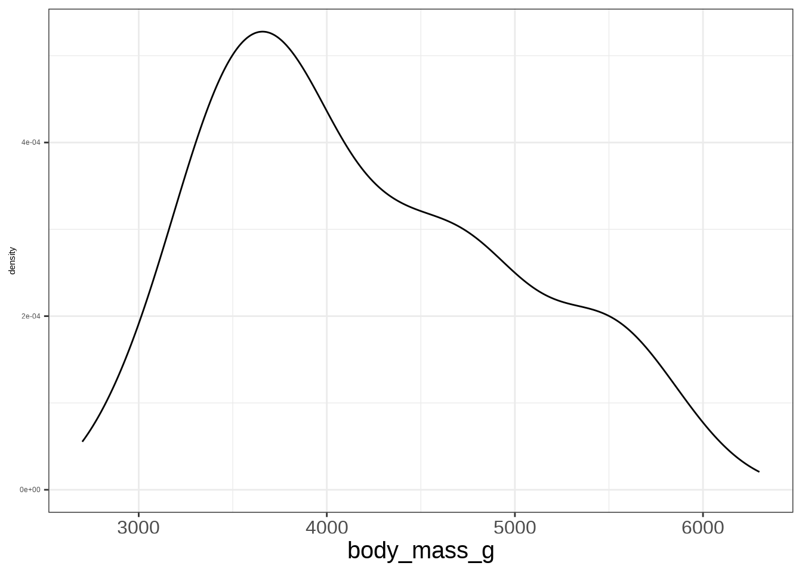
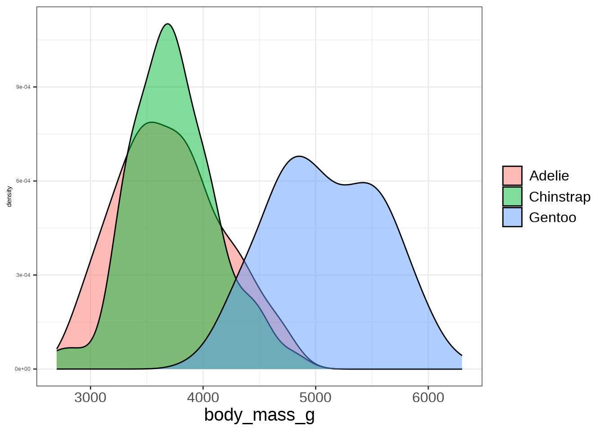
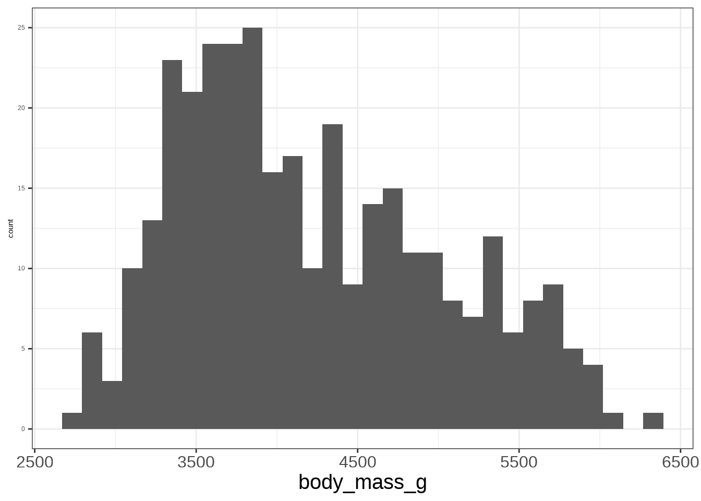
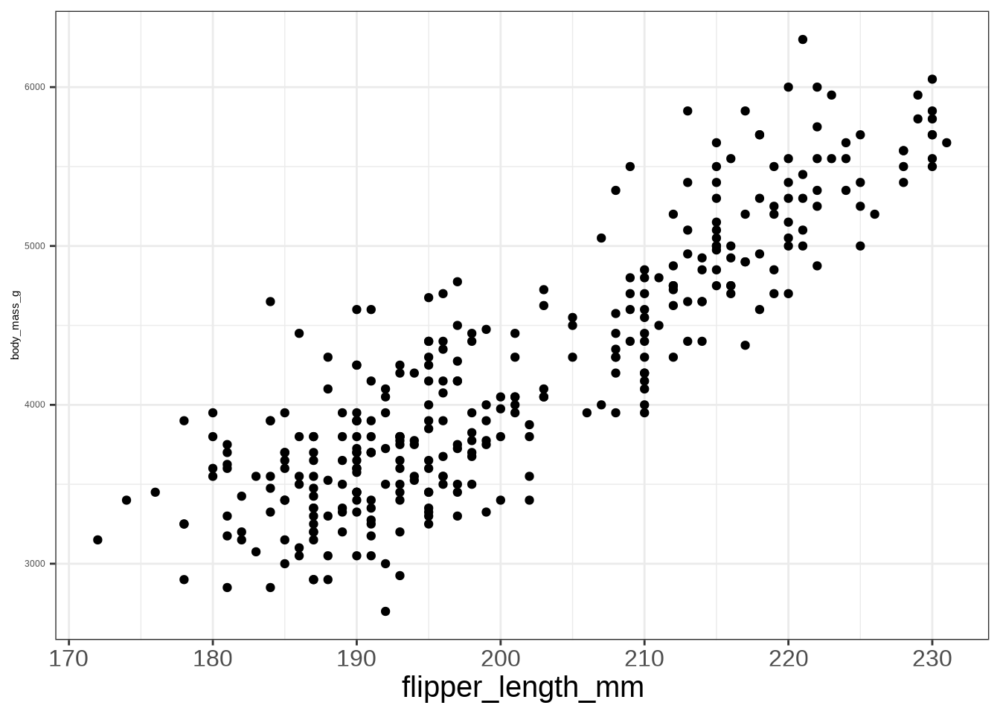
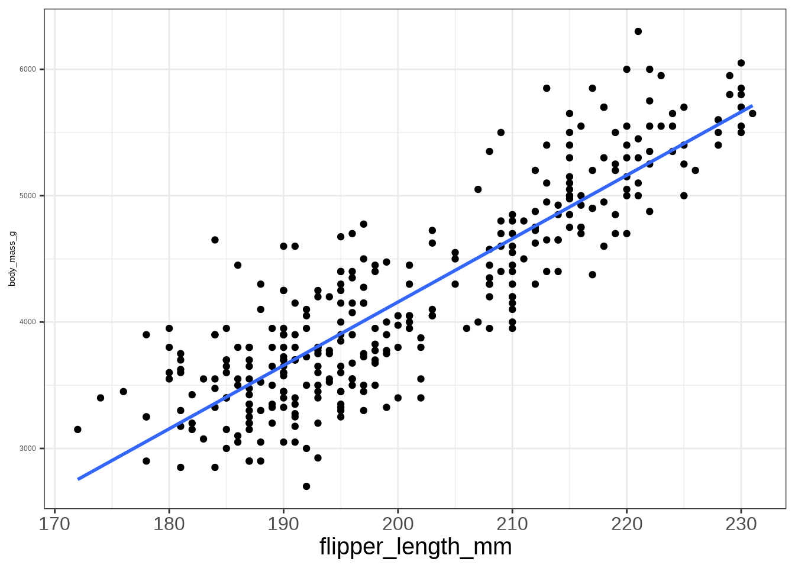
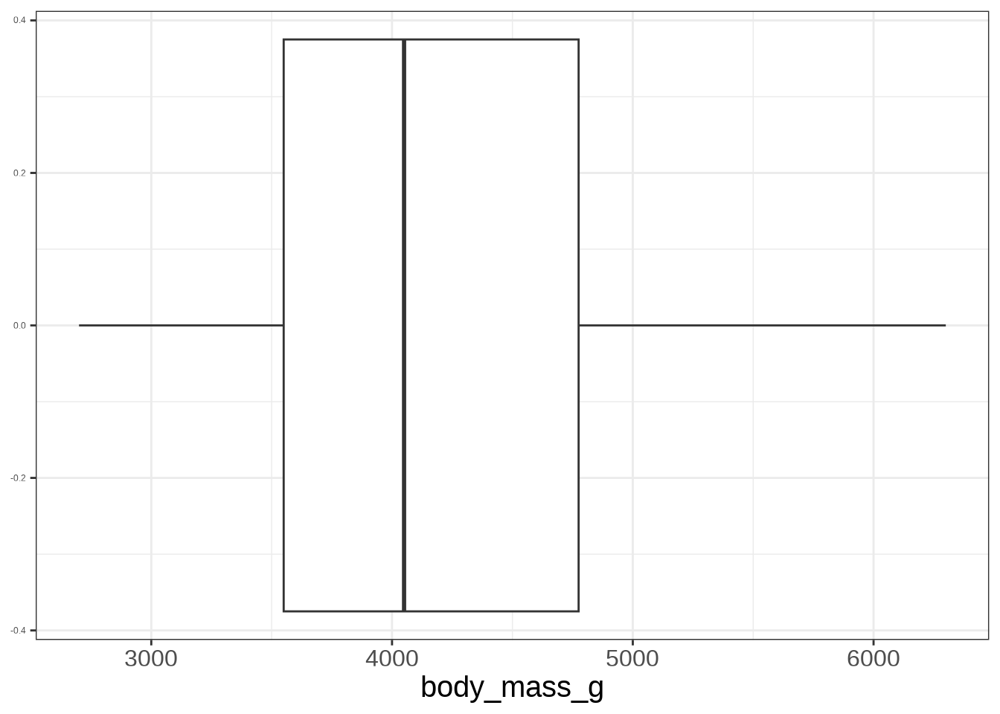
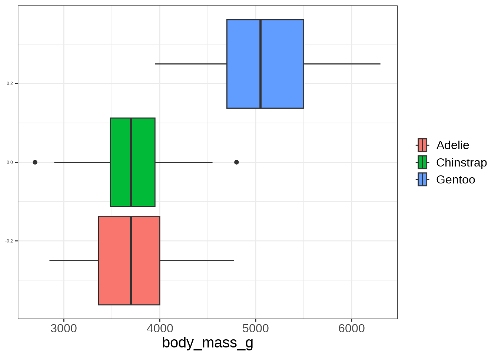

Linear Regression
Modeling Relationships
Explaining Variation
This is the process where we try to reduce the variation with the use of other variables.
Can be thought of as getting it less wrong when taking an educated guess.
Explaining Variation
Explaining Variation with One Variable

A Simple Model
Generated Model
\[ Y \sim DGP_1 \]
A Simple Model

A Simple Model
\[ Y = \_\_\_ + error \]
Notation
\[ Y = \ \ \ \ \ \ \ \ \ + \varepsilon \]
The Simple Generated Model
\[ Y \sim \mu + \varepsilon \]
\[ \varepsilon \sim DGP_2 \]
\(DGP_2\) is not the same as the \(DGP_1\), it is transformed due \(\beta_0\). Consider this the NULL \(DGP\).
Observing Data
\[ Y = \beta_0 + \varepsilon \]
Estimated Line
\[ \hat Y=\hat\beta_0 \]
Notation
Observed
\[ Y = \beta_0 + \varepsilon \]
Estimated
\[ \hat Y = \hat \beta_0 \]
Modelling Data
Indexing Data
The data in a data set can be indexed by a number.
penguins[1,-c(1:2)]#> # A tibble: 1 × 6
#> bill_length_mm bill_depth_mm flipper_length_mm body_mass_g sex year
#> <dbl> <dbl> <int> <int> <fct> <int>
#> 1 39.1 18.7 181 3750 male 2007Making the variable “body_mass_g” be represented by \(Y\) and “flipper_length_mm” as \(X\):
\[ Y_1 = 3750 \ \ X_1=181 \]
Indexing Data
\[ Y_i, X_i \]
Data
With the data that we collect from a sample, we hypothesize how the data was generated.
Using a simple model:
\[ Y_i = \beta_0 + \varepsilon_i \]
Estimated Value
\[ \hat Y_i = \hat \beta_0 \]
Estimation
To estimate \(\hat \beta_0\), we minimize the follow function:
\[ \sum^n_{i=1} (Y_i-\hat Y_i)^2 \]
This is known as the sum squared errors, SSE
Residuals
The residuals are known as the observed errors from the data in the model:
\[ r_i = Y_i - \hat Y_i \]
Estimation in R
lm(Y ~ 1, data = DATA)Modeling Body Mass in Penguins
lm(body_mass_g ~ 1, data = penguins)#>
#> Call:
#> lm(formula = body_mass_g ~ 1, data = penguins)
#>
#> Coefficients:
#> (Intercept)
#> 4207Linear Model
Linear Model
The goal of Statistics is to develop models the have a better explanation of the outcome \(Y\).
In particularly, reduce the sum of squared errors.
By utilizing a bit more of information, \(X\), we can increase the predicting capabilities of the model.
Thus, the linear model is born.
Linear Model
\[ Y = \beta_0 + \beta_1 X + \varepsilon \]
\[ \varepsilon \sim DGP_3 \]
Scatter Plot
Code
ggplot(penguins, aes(flipper_length_mm, body_mass_g)) +
geom_point() +
theme(axis.text.x = element_text(size = 24),
axis.title.x = element_text(size = 30),
plot.title = element_text(size = 48),
strip.text = element_text(size = 20),
legend.title = element_blank(),
legend.text = element_text(size = 24))
Imposing a Line
Code
ggplot(penguins, aes(flipper_length_mm, body_mass_g)) +
geom_point() +
stat_smooth(method = "lm", se = F) +
theme(axis.text.x = element_text(size = 24),
axis.title.x = element_text(size = 30),
plot.title = element_text(size = 48),
strip.text = element_text(size = 20),
legend.title = element_blank(),
legend.text = element_text(size = 24))
Modelling the Data
\[ Y_i = \beta_0 + \beta_1 X_i + \varepsilon_i \]
Linear Model
\[ \hat Y_i = \hat \beta_0 + \hat \beta_1 X_i \]
Goal is to obtain numerical values for \(\hat \beta_0\) and \(\hat \beta_1\) that will minimize the SSE.
SSE
\[ \sum^n_{i=1} (Y_i-\hat Y_i)^2 \]
\[ \hat Y_i = \hat \beta_0 + \hat \beta_1 X_i \]
Fitting a Model in R
lm(Y ~ X, data = DATA)Example
Y: “body_mass_g”; X: “flipper_length_mm”
lm(body_mass_g ~ flipper_length_mm, data = penguins)#>
#> Call:
#> lm(formula = body_mass_g ~ flipper_length_mm, data = penguins)
#>
#> Coefficients:
#> (Intercept) flipper_length_mm
#> -5872.09 50.15\[ \hat Y_i = -5872.09 + 50.15 X_i \]
Interpretation of \(\hat\beta_0\)
The intercept \(\hat \beta_0\) can be interpreted as the base value when \(X\) is set to 0.
Some times the intercept can be interpretable to real world scenarios.
Other times it cannot.
Interpreting Example
\[ \hat Y_i = -5872.09 + 50.15 X_i \] When flipper length is 0 mm, the body mass is -5872 grams.
Interpretation of \(\hat \beta_1\)
The slope \(\hat \beta_1\) indicates how will y change when x increases by 1 unit.
It will demonstrate if there is, on average, a positive or negative relationship based on the sign provided.
Interpreting Example
\[ \hat Y_i = -5872.09 + 50.15 X_i \]
When flipper length increases by 1 mm, the body mass will increase by 50.15 grams.
Categorical Variables
Body Mass with Species
Code
penguins |>
ggplot(aes(body_mass_g)) +
geom_boxplot() +
theme(axis.text.x = element_text(size = 24),
axis.title.x = element_text(size = 30),
plot.title = element_text(size = 48),
strip.text = element_text(size = 20),
legend.title = element_blank(),
legend.text = element_text(size = 24))
Body Mass with Species
Code
penguins |>
ggplot(aes(body_mass_g, fill = species)) +
geom_boxplot() +
theme(axis.text.x = element_text(size = 24),
axis.title.x = element_text(size = 30),
plot.title = element_text(size = 48),
strip.text = element_text(size = 20),
legend.title = element_blank(),
legend.text = element_text(size = 24))
Group Statistics
We can use statistics to explain a continuous variable by the categories.
Compute statistics for each group.
num_by_cat_stats(DATA, NUM, CAT)Compute Group Statistics
num_by_cat_stats(penguins, body_mass_g, species)#> # A tibble: 3 × 11
#> species min q25 mean median q75 max sd var iqr missing
#> <fct> <int> <dbl> <dbl> <dbl> <dbl> <int> <dbl> <dbl> <dbl> <int>
#> 1 Adelie 2850 3362. 3706. 3700 4000 4775 459. 210332. 638. 0
#> 2 Chinstrap 2700 3488. 3733. 3700 3950 4800 384. 147713. 462. 0
#> 3 Gentoo 3950 4700 5092. 5050 5500 6300 501. 251478. 800 0Linear Models with Categorical Variables
A line is normally used to model 2 continuous variables.
However, the predictor variable \(X\) can be restricted to a set a variables that can symbolize categories.
A category will be used as a reference for a model.
Binary (Dummy) Variables
Binary variables are variable that can only take on the value 0 or 1.
\[ D_i = \left\{ \begin{array}{cc} 1 & Category\\ 0 & Other \end{array} \right. \]
Binary (Dummy) Variables
To fit a model with categorical variables, we must utilize dummy (binary) variables that indicate which category is being referenced. We use \(C-1\) dummy variables where \(C\) indicates the number of categories. When coded correctly, each category will be represented by a combination of dummy variables.
Example
If we have 4 categories, we will need 3 dummy variables:
| Cat 1 | Cat 2 | Cat 3 | Cat 4 | |
|---|---|---|---|---|
| Dummy 1 | 1 | 0 | 0 | 0 |
| Dummy 2 | 0 | 1 | 0 | 0 |
| Dummy 2 | 0 | 0 | 1 | 0 |
Species Dummy Variables
| Chinstrap | Gentoo | Adelie | |
|---|---|---|---|
| \(D_1\) | 1 | 0 | 0 |
| \(D_2\) | 0 | 1 | 0 |
Linear Model
\[ \hat Y_i = \hat \beta_0 + \hat\beta_1 D_{1i} + \hat\beta_2 D_{2i} \]
\(\hat \beta_1\) indicates how body mass changes from Adelie to Chinstrap.
\(\hat \beta_2\) indicates how body mass changes from Adelie to Gentoo.
\(\hat \beta_0\) represents the baseline level, in this case the body mass of Adelie.
Fitting a Model in R
lm(Y ~ X, data = DATA)Example
lm(body_mass_g ~ species, penguins)#>
#> Call:
#> lm(formula = body_mass_g ~ species, data = penguins)
#>
#> Coefficients:
#> (Intercept) speciesChinstrap speciesGentoo
#> 3706.16 26.92 1386.27\[ \hat Y_i = 3706 + 26.92 D_{1i} + 1386.27 D_{2i} \]
Finding the Adelie MASS
\[ \hat Y_i = 3706 + 26.92 (0) + 1386.27 (0) \]
Finding the Chinstrap MASS
\[ \hat Y_i = 3706 + 26.92 (1) + 1386.27 (0) \]
Finding the Gentoo MASS
\[ \hat Y_i = 3706 + 26.92 (0) + 1386.27 (1) \]
Intepreting \(\hat \beta_1\)
On average, Chinstrap has a larger mass than Adelie by about 26.92 grams.
Intepreting \(\hat \beta_2\)
On average, Gentoo has a larger mass than Adelie by about 1386.27 grams.
Strength and Correlation
Correlation
Correlation is a statistics that can be used to describe the strength of the relationship between 2 continuous variables.
\[ r = \frac{1}{n-1}\sum^n_{i=1}\frac{x_i - \bar x}{s_x}\frac{y_i - \bar y}{s_y} \]
- \(\bar x\), \(\bar y\): sample means
- \(s_x\), \(s_y\): sample standard deviations
\[ -1 \leq r \leq 1 \]
Correlations

Coefficient of Determination
The coefficient of determination evaluates the strength between an outcome \(Y\) and the linear model, which includes \(X\).
\[ R^2 = r^2 \]
\[ 0 \leq R^2 \leq 1 \]
The coefficient of determination measures the total variation explained by the linear model. The closer to 1, the better the linear model.
Correlation in R
cor(DATA$Y, DATA$X)Example
cor(penguins$body_mass_g, penguins$flipper_length_mm)#> [1] 0.8729789Coefficient of Determination in R
xlm <- lm(Y ~ X, data = DATA)
r2(xlm)Example
xlm <- lm(body_mass_g ~ species, penguins)
r2(xlm)#> [1] 0.6744887